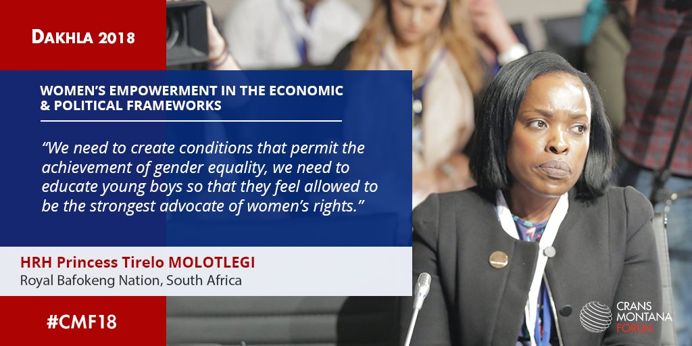
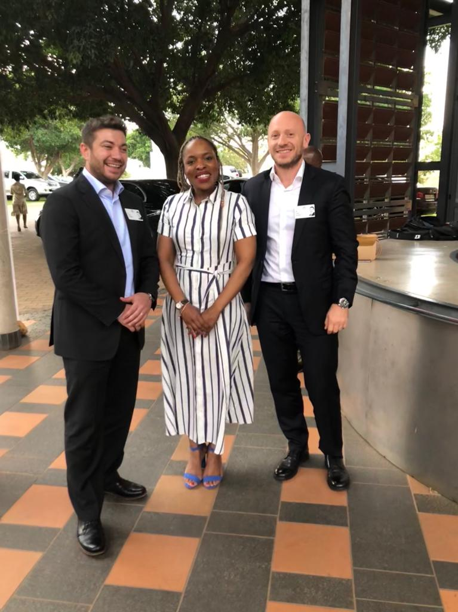
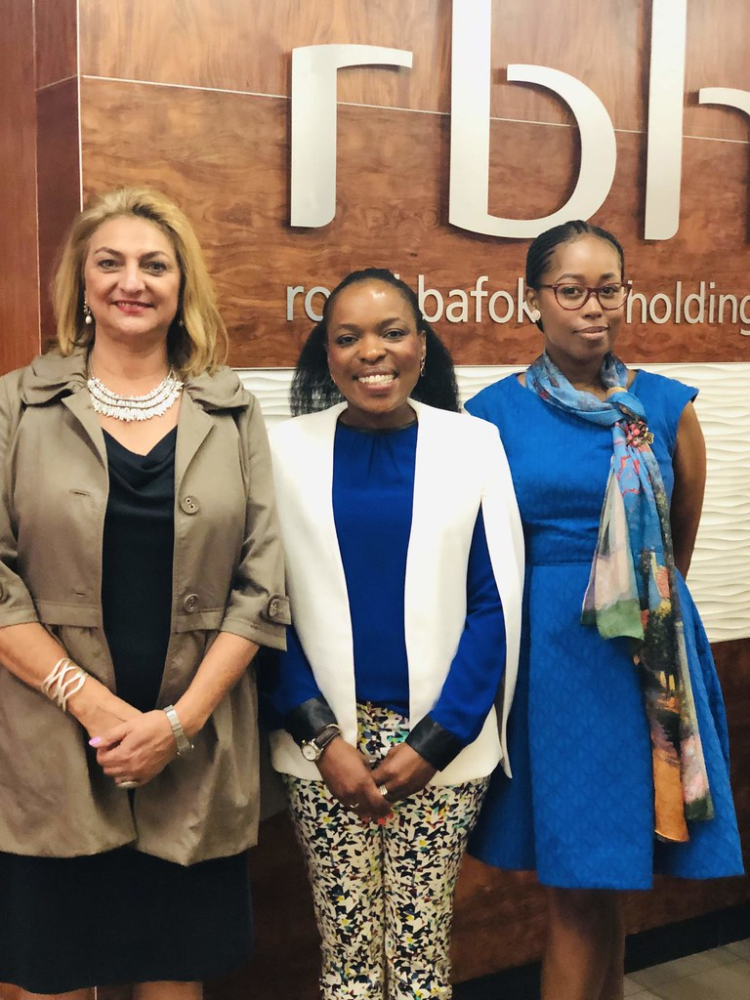
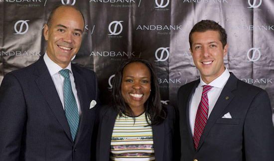

Advocacy
“When the world is silent, even one voice becomes powerful.”- Malala Yousafzai. ...

October 12, 2023
King Edward Patrick Lebone Memorial
Utilizing Advanced Digital softwares to optimize operations


October 12, 2023
Princess Tirelo at Starlight Global
Creating educational funds for engineering students